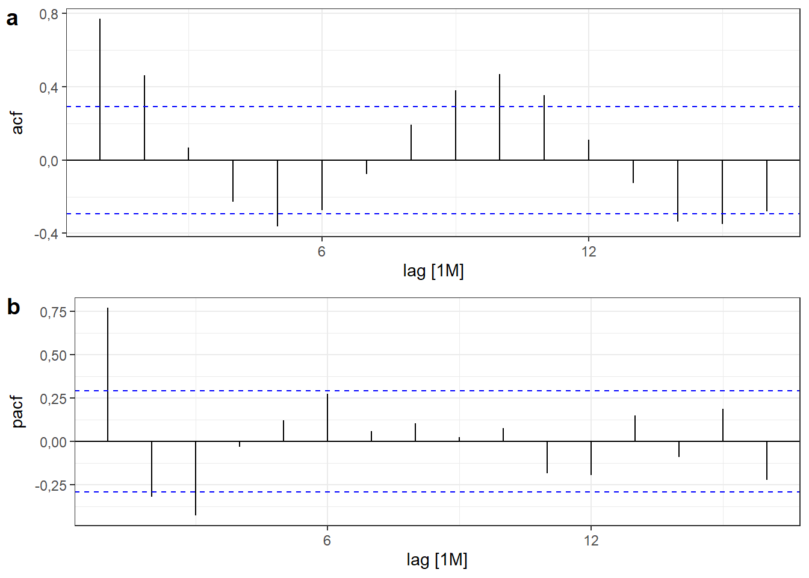
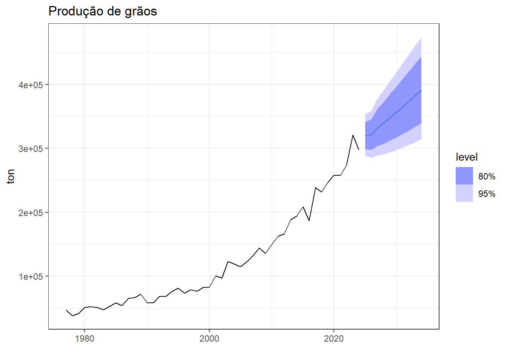

6 Modelos auto-regressivos integrados de médias móveis (ARIMA)
6.1 Estacionariedade em séries temporais
As séries temporais estacionárias são aquelas que não apresentam tendência ou sazonalidade, de forma que suas propriedades não dependam do tempo. Um ruído branco é um exemplo de série estacionária. Algumas séries cíclicas podem ser estacionárias, caso os picos e vales não sejam previsíveis devido a variabilidade na dimensão do ciclo.
A Figura 6.1 expõe exemplos de séries temporais estacionária. À esquerda observa-se um ruído branco, no centro uma série com tendência, sendo esta a série do valor de fechamento da ação PETR3 da Petrobrás e, à direita uma série com sazonalidade, neste caso uma série de produção de energia solar no Brasil para os primeiros dias de dezembro de 2023, com frequência horária.
6.1.1 Diferenciação
A diferenciação é útil para tornar uma série não estacionária em estacionária. Ela serve para remover a variação no nível de uma série, estabilizando sua média.
A série diferenciada consiste na mudança entre observações subsequentes, contendo esta ao final \(T-1\) observações.
\[ y_t' = y_t-y_{t-1} \]
Se a série diferenciada consiste em um ruído branco, \(\varepsilon_t\), então pode-se escrever:
\[ y_t-y_{t-1} = \varepsilon_t \]
Um modelo onde a observação posterior é igual à anterior adicionada de um ruído branco é chamado de caminhada aleatória (random walk). O modelo de caminhada aleatória estima a próxima observação igual à anterior, \(\hat y_t = y_{t-1}\), conforme o método ingênuo. No caso de média não nula, como a maior parte das séries, pode-se considerar uma constante, conforme segue, onde a constante, \(c\), consiste na média das diferenças.
\[ y_t-y_{t-1} = \varepsilon_t + c \]
A Figura 6.2 expõe a série não estacionária para o índice Ibovespa, além da série obtida a partir da diferenciação desta, a qual consiste na variação diária do índice. A série diferenciada apresenta estacionariedade. A Figura exibe também os correlagramas da série original e da diferenciada. Observa-se que a série diferenciada, ao contrário da original, não apresenta autocorrelação.
\[ y_t-y_{t-1} = c+\varepsilon_t \]
O modelo de caminhada aleatória é muito útil para séries econométricas e de finanças. Geralmente tais séries apresentam longos períodos de tendência de queda ou crescimento, com mudanças inesperadas de difícil explicação.
Em casos onde a diferenciação de primeira ordem não garante a estacionariedade, pode-se ainda aplicar uma diferenciação de segunda ordem.
\[ \begin{align} y_t'' &= y_t'-y_{t-1}' \\ &= (y_t-y_{t-1})-(y_{t-1}-y_{t-2}) \\ &= y_t-2y_{t-1}+y_{t-2} \end{align} \]
Em séries sazonais é importante aplicar a diferenciação sazonal conforme segue, onde \(m\) é o número de períodos sazonais.
\[ y_t'= y_t - y_{t-m} \]
A Figura 6.3 apresenta a série de passageiros em vôos do Brasil. Foi aplicado logaritmo para estabilizar a variação anual. Posteriormente, foi realizada diferenciação sazonal, \(m=12\) e, em seguida, outra diferenciação porém mensal, de forma a garantir a estacionariedade. Logo, neste caso, a diferenciação anual trata a sazonalidade e a mensal a tendência.

Tomando a diferenciação de primeira ordem como sendo sazonal, \(y' = y_t-y_{t-m}\), então a diferenciação de segunda ordem, fica:
\[ \begin{align} y'' &= y'-y'_{t-1} \\ &= (y_t-y_{t-m})-(y_{t-1}-y_{t-m-1}) \\ &= y_t - y_{t-m} -y_{t-1}+y_{t-m-1} \\ \end{align} \]
6.1.2 Testes de raízes unitárias
Os testes de raízes unitárias servem para avaliar se a série apresenta ou não estacionariedade. O teste de Kwiatkowski-Phillips-Schmidt-Shin (KPSS) é uma opção, com a hipótese nula indicando a estacionariedade da série. A saída do teste reporta 0,01, se o p-valor for menor que 0.01 e reporta 0.1, se o p-valor for maior que 0,1. A Tabela 6.1 apresenta o resultado do teste para a série do índice Ibovespa, indicando a rejeição da hipótese nula de estacionariedade, sendo necessária a diferenciação da série.
| kpss_stat | kpss_pvalue |
|---|---|
| 0.7490546 | 0.01 |
6.1.3 Operador de defasagem
O operador ou notação de defasagem (backward shift notation - \(B\)) é útil para trabalhar com diferenciação, defasagem (lag) e para representação de modelos ARIMA. O operador \(B\) em \(y_t\) defasa a observação em um período no tempo:
\[ By_t = y_{t-1} \]
No caso de defasagem de segunda ordem, tem-se:
\[ B(By_t) = B^2y_t = y_{t-2} \]
Para caso sazonal, por exemplo em séries de frquência horária e sazonalidade diária, pode ser útil usar \(B^{24}y_t = y_{t-24}\), de forma a retornar na mesma hora no dia anterior.
A diferenciação de primeira ordem com tal notação pode ser escrita como:
\[ \begin{align} y'_t &= y_t-y_{t-1} \\ &=y_t-By_t \\ &=(1-B)y_t \end{align} \]
De forma análoga, a diferenciação de segunda ordem fica:
\[ \begin{align} y_t'' &= y_t-2y_{t-1}+y_{t-2} \\ &= y_t-2By_t+B^2y_t \\ &= (1-B)^2y_t \end{align} \]
6.2 Modelos autorregressivos
Um modelo autorregressivo consiste em um modelo de regressão para a série, \(y_t\), em função do seu passado, ou para termos defasados, \(y_{t-1}, y_{t-2}, ..., y_{t-p}\). Um modelo autorregressivo de ordem \(p\) ou \(AR(p)\) pode ser escrito como:
\[ \begin{align} y_t &= c+\phi_1y_{t-1} + \phi_2y_{t-2} + \ldots + \phi_py_{t-p} + \varepsilon_t \\ &= c+\phi_1By_t + \phi_2B^2y_t + \ldots + \phi_pB^py_t + \varepsilon_t \\ &(1-\phi_1B- \phi_2B^2 - \ldots - \phi_pB^p)y_t = \varepsilon_t \\ \end{align} \]
A Figura Figura 6.4 expõe séries temporais que seguem processos autorregressivos \(AR(1)\) e \(AR(2)\). Na Figura 6.4(a) tem-se um processo autorregressivo de primeira ordem, \(AR(1)\), com \(y_t=15-0.5y_{t-1}+\varepsilon_t\). Na Figura Figura 6.4(b) tem-se um processo autorregressivo de segunda ordem, \(AR(2)\), com \(y_t = 8+1.3y_{t-1}-0.7y_{t-2}+\varepsilon_t\).

Os processos autorregressivos são muito flexíveis. A mudança dos parâmetros \(\phi_1,..., \phi_p\) pode resultar em padrões muito distintos.
Para um modelo \(AR(1)\), \(y_t=c+\phi_1y_{t-1} + \varepsilon_t\):
- Se \(c=0\) e \(\phi_1=0\), tem-se um ruído branco.
- Se \(c=0\) e \(\phi_1=1\), tem-se uma caminhada aleatória.
- Se \(c\neq0\) e \(\phi_1=1\), tem-se uma caminhada aleatória com deriva.
- Se \(\phi_1<1\), \(y_t\) tende a oscilar em torno da média.
Os processos autorregressivos são usados para séries estacionárias, sendo algumas restrições impostas:
- Para um modelo \(AR(1)\): \(-1<\phi_1<1\).
- Para um modelo \(AR(2)\): \(-1<\phi_2<1\), \(\phi_1+\phi_2<1\), \(\phi_2+\phi_1<1\).
6.3 Modelos de média móvel
Um modelo de média móvel considera os erros passados ao invés das observações passadas, sendo um modelo de média móvel de ordem \(q\), \(MA(q)\) definido conforme segue:
\[ \begin{align} y_t&=c+\varepsilon_t+\theta_1\varepsilon_{t-1} + \theta_2\varepsilon_{t-2} + \ldots + \theta_q\varepsilon_{t-q}\\ &=c+\varepsilon_t+\theta_1B\varepsilon_t+\theta_2B^2\varepsilon_t+\ldots+\theta_qB^q\varepsilon_t \\ &=c+ (1+\theta_1B+\theta_2B^2+\ldots+\theta_qB^q)\varepsilon_t \end{align} \]
Como os valores do erro não são observados este modelo não é uma regressão habitual.
É importante também diferenciar os modelos \(MA(q)\) dos modelos de média móvel para suavização. Enquanto os modelos aqui apresentados tem o objetivo de realizar previsões, os modelos de suavização visam estimar a tendência de observações passadas de séries temporais.
A Figura Figura 6.5 ilustra processos de média móvel. Na Figura 6.5(a) um processo de média móvel de primeira ordem, \(MA(1)\), é observado com \(y_t = 15 + \varepsilon_t + 0.6\varepsilon_{t-1}\). Na Figura 6.5(b) tem-se um processo de média móvel de segunda ordem, \(MA(2)\), com \(y_t = 8 + \varepsilon_t - 0.9\varepsilon_{t-1} + 0.5\varepsilon_{t-2}\). Mudando os parâmetros \(\theta_1, ..., \theta_q\) a série varia significativamente. Assim como nos modelos autorregressivos, nos de média móvel a variância do erro \(\sigma_\varepsilon\) só muda a amplitude da série, não o padrão.
Qualquer processo estacionário \(AR(p)\) pode ser escrito como um processo \(MA(\infty)\). Para o caso \(AR(1)\), tem-se:
\[ \begin{align} y_t &= \phi_1y_{t-1} + \varepsilon_t\\ &= \phi_1(\phi_1y_{t-2} + \varepsilon_{t-1}) + \varepsilon_t\\ &= \phi_1^2y_{t-2} + \phi_1\varepsilon_{t-1} + \varepsilon_t\\ &= \phi_1^3y_{t-3} + \phi_1^2y_{t-2} + \phi_1\varepsilon_{t-1} + \varepsilon_t\\ &= ...\\ \end{align} \]
À medida que \(k\) aumenta, \(\phi_1^k\) diminui, considerando \(-1<\phi_1<1\), de forma que o termo de potência maior pode ser desconsiderado. Fazendo \(\phi_1 = \theta_1\), \(\phi_1^2 = \theta_2\) e assim sucessivamente, tem-se o modelo de média móvel inicialmente exposto. Impondo algumas restrições nos parâmetros do modelo \(MA(q)\) é possível escrevê-lo como um processo \(AR(\infty)\).
6.4 Modelos ARIMA não sazonais
Um modelo autorregressivo integrado de média móvel (ARIMA) combina um modelo autorregressivo da série diferenciada e um de média móvel, conforme segue.
\[ \begin{align} y_t'&=c+\phi_1y'_{t-1} + \phi_2y'_{t-2} + \ldots + \phi_py'_{t-p} + \theta_1\varepsilon_{t-1} + \theta_2\varepsilon_{t-2} + \ldots + \theta_q\varepsilon_{t-q} + \varepsilon_t \\ &= c+\phi_1By'_t + \phi_2B^2y'_t + \ldots + \phi_pB^py'_t+\theta_1B\varepsilon_t + \theta_2B^2\varepsilon_t + \ldots + \theta_qB^q\varepsilon_t + \varepsilon_t \\ &(1-\phi_1B- \ldots - \phi_pB^p)(1-B)^dy_t = c+( 1+\theta_1B+\ldots+\theta_qB^q)\varepsilon_t \end{align} \]
Um modelo \(ARIMA(p,d,q)\) consiste em um modelo com grau \(p\) para a parte autorregressiva, com diferenciação de ordem \(d\) e com grau \(q\) para a parte de média móvel. A Tabela 6.2 expõe a sintaxe do modelo ARIMA correspondente para alguns casos especiais.
| Caso especial | Modelo |
|---|---|
| Ruído banco | \(ARIMA(0,0,0)\) sem cte |
| Caminhada aleatória | \(ARIMA(0,1,0)\) sem cte |
| Caminhada aleatória com deriva | \(ARIMA(0,1,0)\) com cte |
| Autorregressão | \(ARIMA(p,0,0)\) |
| Média móvel | \(ARIMA(0,0,q)\) |
A Figura 6.6 expõe a série temporal do volume de produção de coque no Brasil a partir de 2021.
É difícil selecionar apropriadamente os valores adequados de \(p,d,q\) para uma série ao se estimar um modelo ARIMA. O pacote fable auxilia na otimização destes parâmetros segundo a série em análise. A seguir expõe-se o resultado do modelo ARIMA obtido automaticamente.
Series: value
Model: ARIMA(1,0,0) w/ mean
Coefficients:
ar1 constant
0.2763 271035.558
s.e. 0.1433 4547.139
sigma^2 estimated as 969282769: log likelihood=-516.68
AIC=1039.35 AICc=1039.95 BIC=1044.7Foi obtido um modelo ARIMA(1,0,0) exposto a seguir, onde \(\varepsilon_t\) é ruído branco com \(\sigma_\varepsilon = 31133,31\).
\[ y_t = 271035,56 + 0,28y_{t-1} + \varepsilon_t \]
A Figura 6.7 expõe a previsão de 10 meses à frente usando tal modelo.

A Figura 6.8 expõe a série temporal do valor da ação VALE3 a partir de 2020.

Abaixo expõe-se o modelo ARIMA obtido para a série.
Series: Valor
Model: ARIMA(2,0,2) w/ mean
Coefficients:
ar1 ar2 ma1 ma2 constant
1.4603 -0.7901 -0.6441 0.4800 23.9391
s.e. 0.1549 0.1356 0.2359 0.1225 0.5966
sigma^2 estimated as 25.64: log likelihood=-135.27
AIC=282.53 AICc=284.74 BIC=293.37Foi obtido um modelo \(ARIMA(2,0,2)\):
\[ y_t = 23,94 + 1,46y_{t-1} - 0,79y_{t-2} -0,64\varepsilon_{t-1} + 0,48\varepsilon_{t-2} + \varepsilon_t \]
A Figura 6.9 expõe os gráficos dos resíduos do modelo ARIMA(2,0,2) aplicado à série do preço da ação VALE3. Observa-se um padrão de ruído branco, com ausência de autocorrelação.

Conforme Figura 6.10, dada a previsão 10 meses à frente exibida, o modelo capturou bem o padrão cíclico não sazonal da série.
A previsão em modelos ARIMA é realizada usando o modelo ARIMA obtido, considerando \(T = T+h\), onde \(h\) é o número de períodos à frente das observações disponíveis. Para o modelo ARIMA genérico exposto, considerando \(h=1\), tem-se o resultado à seguir, onde o termo de erro para \(t=T+1\) é considerado nulo, \(\varepsilon_{T+1}=0\).
\[ \begin{align} y_{T+1}'&=c+\phi_1y'_{T} + \phi_2y'_{T-2} + \ldots + \phi_py'_{T+1-p} + \theta_1\varepsilon_{T} + \theta_2\varepsilon_{T-1} + \ldots + \theta_q\varepsilon_{T+1-q} + \varepsilon_{T+1} \\ y_{T+1}'&=c+\phi_1y'_{T} + \phi_2y'_{T-2} + \ldots + \phi_py'_{T+1-p} + \theta_1\varepsilon_{T} + \theta_2\varepsilon_{T-1} + \ldots + \theta_q\varepsilon_{T+1-q} \end{align} \]
Em um modelo ARIMA se \(c=0\) e \(d=0\), então a previsão de longo prazo tenderá para zero. Se \(c=0\) e \(d=1\), a previsão a longo prazo tenderá para uma constante. Se \(c=0\) e \(d=2\), a previsão a longo prazo será linear. Se \(c\neq0\) e \(d=0\), a previsão a longo prazo será a média das observações. Se \(c\neq0\) e \(d=1\) a previsão a longo prazo será linear. Para previsões cíclicas é importante \(p\geq2\).
6.5 Autocorrelação parcial
A autocorrelação \(r_k\) mede a relação linear entre a série original \(y_t\) e a série defasada \(y_{t-k}\). Entretanto, se \(y_t\) e \(y_{t-1}\) são correlacionadas, então \(y_{t-1}\) e \(y_{t-2}\) também o serão. Logo, haverá correlação entre \(y_t\) e \(y_{t-2}\). Porém, não porque há uma explicação plausível para \(y_t\) a partir de \(y_{t-2}\), mas simplesmente porque ambas estão relacionadas indiretamente por \(y_{t-1}\).
A autocorrelação parcial visa corrigir o problema da autocorrelação, medindo mais diretamente a relação linear entre \(y_t\) e \(y_{t-k}\) desconsiderando os efeitos das defasagens anteriores, \(1,2,\ldots, k-1\).
A Figura 6.11 expõe os correlogramas de autocorrelação (ACF) e de autocorrelação parcial (PACF) da série do preço da ação VALE3. Observa-se um padrão sinusoidal em ambos correlogramas e última autocorrelação parcial significativa com \(k=3\).

Os correlogramas de ACF e PACF podem auxiliar na definição da ordem do modelo ARIMA em casos \(ARIMA(0,d,q)\) e \(ARIMA(p,d,0)\). Para séries que seguem um padrão \(ARIMA(0,d,q)\):
- A autocorrelação parcial (PACF) decai exponencialmente ou tem padrão senoidal;
- Há significância na autocorrelação (ACF) de lag \(q\), mas não além deste.
Para séries que seguem um padrão \(ARIMA(p,d,0)\):
- A autocorrelação (ACF) decai exponencialmente ou tem padrão senoidal;
- Há significância na autocorrelação parcial (PACF) de lag \(p\), mas não além deste.
A seguir apresenta-se o resultado do modelo ARIMA(3,0,0) indicado pela interpretação dos correlogramas da Figura Figura 6.11. O modelo obtido apresentou resultado para \(ACCc\) muito próximo ao obtido pela estimativa automática apresentado anteriormente.
Series: Valor
Model: ARIMA(3,0,0) w/ mean
Coefficients:
ar1 ar2 ar3 constant
0.8779 0.1577 -0.4693 31.4916
s.e. 0.1268 0.1812 0.1290 0.7465
sigma^2 estimated as 26.71: log likelihood=-136.62
AIC=283.25 AICc=284.78 BIC=292.286.5.1 Modelagem e seleção de modelos
Os modelos ARIMA podem ser estimados de distintas formas. Para um modelo de ordem \(p,d,q\) pode-se maximizar o log da máxima verossimilhança para estimar os parâmetros \(c\), \(\phi_1,\ldots,\phi_p\) e \(\theta_1,\ldots,\theta_q\), conforme feito no pacote fable. É importante esclarecer que existem distintos algoritmos e softwares diferentes podem não reportar os mesmos resultados.
Para comparar e selecionar modelos pode-se considerar o critério de informação de Akaike (AIC), calculado conforme segue, onde \(k=0\), se \(c=0\), e \(k=1\), caso contrário.
\[ AIC = -2\text{log}(L) + 2(p+k+q+1) \]
O AIC corrigido (\(AICc\)) é calculado conforme segue.
\[ AIC_c = AIC+ \frac{2(p+k+q+1)(p+k+q+2)}{T-p-q-k-2} \]
Outra métrica é o critério de informação Bayesiano (BIC):
\[ BIC = AIC + [\text{log}(T)-2](p+k+q+1) \]
O modelo que minimizar tais métricas deve ser escolhido, sugerindo-se priorizar o \(AICc\).
Uma abordagem para seleção de modelos ARIMA para casos não sazonais pode seguir os seguintes passos:
- Visualize a série e identifique observações não usuais;
- Realize transformação de Box-Cox para estabilizar a variância, se necessário;
- Para séries não estacionárias, sugere-se diferenciar a série até tornar os dados estacionários;
- Examine a autocorrelação e tente identificar algum modelo \(ARIMA(p,d,0)\) via PACF ou \(ARIMA(0,d,q)\) via ACF;
- Selecione o modelo a partir do \(AICc\);
- Avalie os resíduos do modelo selecionado;
- Realize previsões com o modelo.
Em caso de autocorrelação nos resíduos, tente ajustar outro modelo. Para exemplificar o procedimento, considere a série plotada na Figura 7.6, de produção de grãos no Brasil em toneladas. Como a série aparenta apresentar leve heterocedasticidade, será realizada transformação de Box-Cox.
A Figura 6.13 apresenta a série após transformação com \(\lambda=0,6264\).

A Tabela 6.3 apresenta o resultado do teste de KPSS para a série transformada, indicando a rejeição da hipótese nula de estacionariedade desta.
| kpss_stat | kpss_pvalue |
|---|---|
| 1.219482 | 0.01 |
A Figura 6.14 apresenta a variação da série transformada. Confirma-se estacionariedade após diferenciação de primeira ordem. Mesmo com a transformação de Box-Cox, após 2015 houve períodos de variação mais alta.
A Figura 6.15 expõe os correlogramas de ACF e PACF para a série diferenciada e transformada. Observa-se que o primeiro indica um modelo \(ARIMA(0,1,1)\), enquanto segundo indica um modelo \(ARIMA(1,1,0)\).
A seguir expõe-se o resultado do modelo \(ARIMA(1,1,0)\). Foi obtido \(ACCc\) = 585,42.
Series: valor
Model: ARIMA(1,1,0) w/ drift
Transformation: box_cox(valor, lambda)
Coefficients:
ar1 constant
-0.4378 101.1837
s.e. 0.1329 19.3580
sigma^2 estimated as 17775: log likelihood=-289.42
AIC=584.85 AICc=585.42 BIC=590.33A seguir expõe-se o resultado do modelo \(ARIMA(0,1,1)\). Foi obtido \(ACCc\) = 586,36, indicando que o modelo anterior apresentou melhor ajuste.
Series: valor
Model: ARIMA(0,1,1) w/ drift
Transformation: box_cox(valor, lambda)
Coefficients:
ma1 constant
-0.3959 69.2422
s.e. 0.1145 11.9141
sigma^2 estimated as 18159: log likelihood=-289.89
AIC=585.79 AICc=586.36 BIC=591.27A Figura 6.16 expõe os gráficos de resíduos para o modelo \(ARIMA(1,1,0)\) aplicado à série diferenciada e transformada de produção de grãos. Os resíduos são não correlacionados e não aparentam apresentar desvio considerável de normalidade.

A Tabela 6.4 resume o resultado do teste de Ljung-Box para os resíduos do modelo \(ARIMA(1,1,0)\) para a série de produção de grãos. O teste deve ser realizado considerando \(K=p+q\) graus de liberdade. O alto p-valor obtido indica não haver indícios para rejeição da hipótese nula de ausência de autocorrelação.
| .model | lb_stat | lb_pvalue |
|---|---|---|
| ARIMA(box_cox(valor, lambda) ~ pdq(1, 1, 0)) | 4.951101 | 0.8385499 |
A Figura 6.17 expõe a previsão realizada para \(h=10\) anos à frente com o modelo ajustado. A previsão pontual para 2033 é de 397000 toneladas de grãos.

6.6 ARIMA com sazonalidade
Modelos ARIMA também podem ser aplicados a casos sazonais, sendo denotados \(ARIMA(p,d,q)(P,D,Q)_m\), onde \(m\) é o período sazonal e os termos da parte sazonal do modelo são denotados por letras maiúsculas. Um modelo \(ARIMA(1,1,1)(1,1,1)_{12}\) é para sazonalidade anual e pode ser escrito em notação de defasagem conforme segue, onde \(\Phi\) e \(\Theta\) são, respectivamente, os termos autorregressivos e de média móvel, ambos de primeira ordem, para a parte sazonal. Os modelos ARIMA sazonais são comumente chamados de SARIMA.
\[ (1-\phi_1B)(1-\Phi_1B^{12})(1-B)(1-B^{12})y_t = c+( 1+\theta_1B)( 1+\Theta_1B^{12})\varepsilon_t \]
A Figura 6.18 expõe a variação sazonal da sériede log(passageiros) em vôos do Brasil, além dos correlogramas de ACF e PACF. Pode-se observar que a série sazonalmente diferenciada ainda apresenta alta tendência. É ainda necessário uma diferenciação de primeira ordem.
A Figura 6.19 apresenta a série mais uma vez diferenciada. Examinando-se o correlograma de ACF, pode-se sugerir um modelo MA(1) para a parte não sazonal, dada a significância no lag 1, e um modelo MA(1) para a parte sazonal, dada a significância no lag 12. Logo, pode-se sugerir um modelo \(ARIMA(0,1,1)(0,1,1)_{12}\). Ao observar o correlograma de PACF, há indícios de que um modelo autorregressivo de ordem AR(1) seja adequado para a parte não sazonal, enquanto um modelo AR(3) pode ser interessante para a parte sazonal, devido aos picos de 12, 24 e 26 meses. Entretanto, ao se tentar estimar um modelo \(ARIMA(1,1,0)(3,1,0)_{12}\) não foram reportados resultados, sendo então aproximado um modelo \(ARIMA(1,1,0)(2,1,0)_{12}\).

Além dos modelos sugeridos, o método automático do pacote fable sugere um modelo de ordem \(ARIMA(1,1,1)(0,1,1)_{12}\), conforme Tabela 6.5, muito próximo dos considerados inicialmente.
| Modelo | Ordem |
|---|---|
| arima011011 | <ARIMA(0,1,1)(0,1,1)[12]> |
| arima110210 | <ARIMA(1,1,0)(2,1,0)[12]> |
| auto | <ARIMA(1,1,1)(0,1,1)[12]> |
A Tabela 6.6 resume o resultado dos três modelos. Considerando o AICc, o modelo automático apresentou por pouco o melhor resultado.
| .model | sigma2 | log_lik | AIC | AICc | BIC |
|---|---|---|---|---|---|
| auto | 0.0010447 | 455.1001 | -902.2002 | -902.0201 | -888.5004 |
| arima011011 | 0.0010532 | 453.7601 | -901.5202 | -901.4126 | -891.2453 |
| arima110210 | 0.0011762 | 444.0289 | -880.0578 | -879.8776 | -866.3580 |
A seguir são apresentados os coeficientes do modelo \(ARIMA(1,1,1)(0,1,1)_{12}\).
Series: Passageiros
Model: ARIMA(1,1,1)(0,1,1)[12]
Transformation: log(Passageiros)
Coefficients:
ar1 ma1 sma1
0.5214 -0.6437 -0.7410
s.e. 0.2121 0.1859 0.0584
sigma^2 estimated as 0.001045: log likelihood=455.1
AIC=-902.2 AICc=-902.02 BIC=-888.5A Figura 6.20 apresenta os gráficos de resíduos do modelo \(ARIMA(1,1,1)(0,1,1)_{12}\). A série residual apresenta padrão estacionário e não há indícios de desvio de normalidade pelo histograma. Há significância na autocorrelação para defasagem de 11, 13 e 22 observações.
A Tabela 6.7 apresenta o resultado do teste de Ljung-Box para os resíduos do modelo \(ARIMA(1,1,1)(0,1,1)_{12}\) para a série log(passageiros). No caso sazonal, considera-se \(K=p+q+P+Q\) graus de liberdade no teste. Considerando um nível de significância de 0,05, não há indícios suficientes para rejeição da hipótese nula de ausência de autocorrelação residual.
| .model | lb_stat | lb_pvalue |
|---|---|---|
| auto | 28.77407 | 0.1195322 |
A Figura 6.21 apresenta a previsão para 3 anos à frente para a série de passageiros em vôos do Brasil. Sabe-se que a pandemia reduziu o volume de vôos para níveis menores que os dos anos 2000. Entretanto, o modelo capturou bem a tendência dos últimos anos e o padrão de sazonalidade no número de passageiros. Após alguns anos de observação pós-pandemia, modelos ARIMA seguirão sendo úteis para modelar a variação observada em volume de passageiros em vôos do Brasil.

A Figura 6.22 expõe a série de produtos não duráveis no Brasil. Observa-se padrão sazonal anual com tendência de crescimento até 2015 e depois de queda, com pior resultado em 2020, devido a pandemia. Após, 2021 observa-se tendência de recuperação.
A Figura 6.23 expõe a série de variação sazonal de bens de consumo não duráveis, considerando os dados de até dezembro de 2021. Pode-se sugerir pelo correlograma de PACF um modelo de ordem (3,1,0) para a parte não sazonal e um modelo de ordem (2,0,0) para a parte sazonal, dado o pico nos atrasos de 12 e 24 meses.
A Tabela 6.8 expõe os modelos testados manualmente e o selecionado automaticamente.
| name | Modelo | Ordem |
|---|---|---|
| nao_duraveis | arima310200 | <ARIMA(3,1,0)(2,0,0)[12] w/ drift> |
| nao_duraveis | auto | <ARIMA(4,1,1)(0,1,1)[12]> |
A Tabela 6.9 apresenta os resultados para os modelos testados na série de bens de consumo não duráveis. O modelo \(ARIMA(4,1,1)(0,1,1)_{12}\), selecionado via pacote fable apresenta melhor ajuste. Hyndman e Khandakar (2008) descrevem a abordagem usada no pacote para seleção automática de modelos ARIMA sem e com sazonalidade e também para modelos ETS.
| .model | sigma2 | log_lik | AIC | AICc | BIC |
|---|---|---|---|---|---|
| auto | 14.09469 | -591.4166 | 1196.833 | 1197.374 | 1220.428 |
| arima310200 | 16.65650 | -649.3569 | 1312.714 | 1313.225 | 1336.688 |
A Figura 6.24 apresenta os gráficos residuais para o modelo \(ARIMA(4,1,1)(0,1,1)_{12}\) para a série de bens de consumo não duráveis. O valor discrepante março de 2021 é atribuído à pandemia. Observa-se picos de autocorrelação parcial para defasagens próximas de 2 anos. No entanto, pelo teste de Ljung-Box, apresentado na Tabela 6.10, não há indícios suficientes que indicam a rejeição da hipótese de independência dos resíduos.

| name | .model | lb_stat | lb_pvalue |
|---|---|---|---|
| nao_duraveis | auto | 25.45438 | 0.1129033 |
A Figura 6.25 apresenta graficamente os resultados de previsão para além de 2021, juntamente com os dados disponíveis e separados para teste. Observa-se boa proximidade com os dados não considerados para treinamento do modelo. Apesar da queda em 2021 devido à pandemia, o modelo treinado conseguiu apresentar uma boa projeção à curto e médio prazo.

A Tabela 6.11 finaliza a análise comparando o desempenho dos modelos estimados aplicados aos dados de teste para a série de bens de consumo não duráveis. Confirma-se a superioridade do modelo estimado automaticamente.
| .model | RMSE | MAE | MAPE |
|---|---|---|---|
| arima310200 | 6.659694 | 5.664403 | 5.710309 |
| auto | 5.714044 | 4.262668 | 4.127184 |